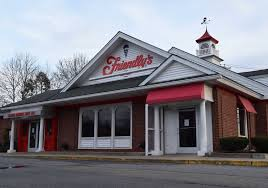

They closed down the Friendly's here. I'm distraught right now. Why would they close it down??? No way they could've gone out of business, everyone loved it, right? Everything is changing so much.

I guess this might need some explanation for out-of-staters (is Friendly's mainly in Mass? I'll find out later). For those who don't know, Friendly's is a chain of restaurants that offer both diner food and ice cream that you can buy at a seperate window. Nothing especially unique, but it has always been a favorite of mine. It's been around since the 30s, and everyone I know has gone there before. Oh, I especially love their Shark in the Water, with the shark gummies and all. I wish I could go there again, but I don't know where the next closest one would be, or how far away it is.
I never expected it to happen. I have so many memories of going there with family, with friends. It's hard sometimes, growing up with a different culture, knowing you're a little different compared to everyone else. But at least there, I always felt safe, know I could share something with everyone. Man, if Friendly's is closing down, what else is next?